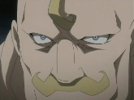
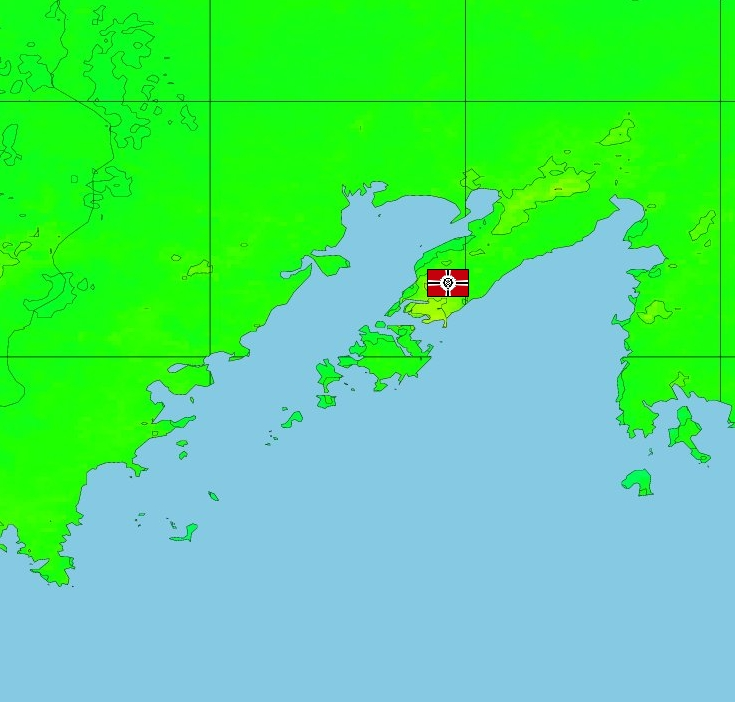

Vladivostok Vladivostok
East Arctic, Siberia Coastal Arctic Fortification Vladimir Antonov Situated in the far east of Siberia, Vladivostok controls the important land route between Eurasia and North America, the small strait and islands of Alaska. A very remote area, the small town of Vladivostok is dwarfed by the military base, used as an area of chief importance to the Duchy, before them the Federation, and Russia before them. Sitting in the cold lands of the Arctic, it is a difficult place to assault, surrounded by the natural hospitality of the frozen north.  Vladimir Antonov Something of an interesting character, Vladimir was the commander of Vladivostok under the Federation, and quickly surrendered it to Zeon in order to "keep his office". He is a huge man, larger even than SAF commander Dozle Zabi, and has been known to pick up and throw his desk at officers who displease him. He rules Vladivostok with a strange sense of honor, unwilling to leave the base under any circumstances, and happy with his own little slice of the world. His mobile suit, the Zock Custom, matches his demeanor perfectly. Vladivostok  |